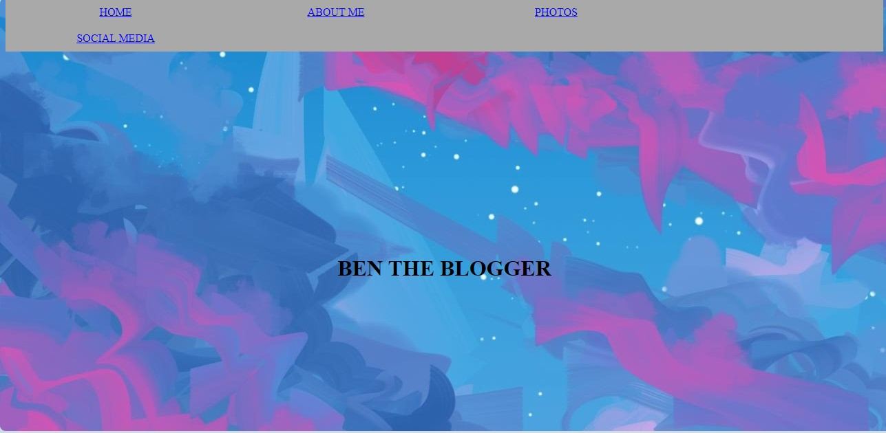
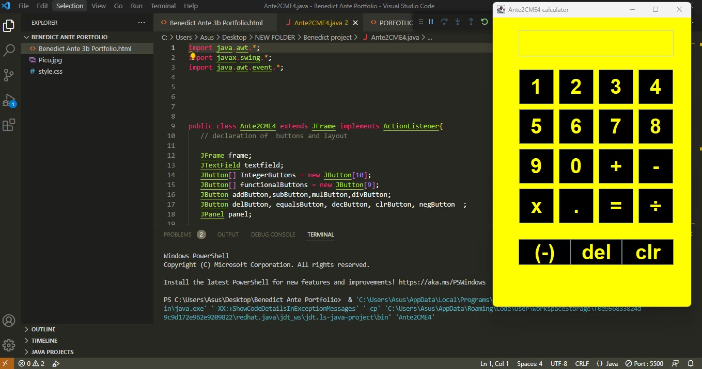
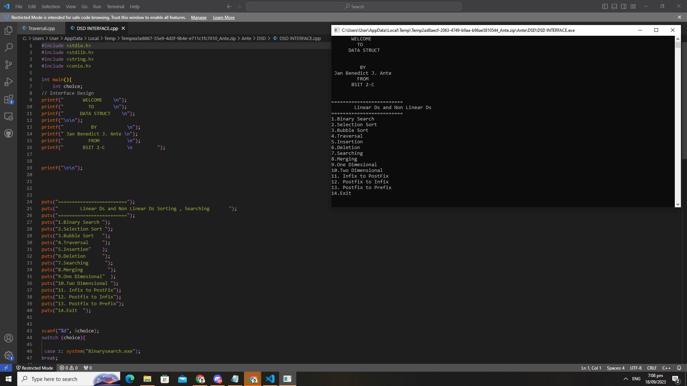
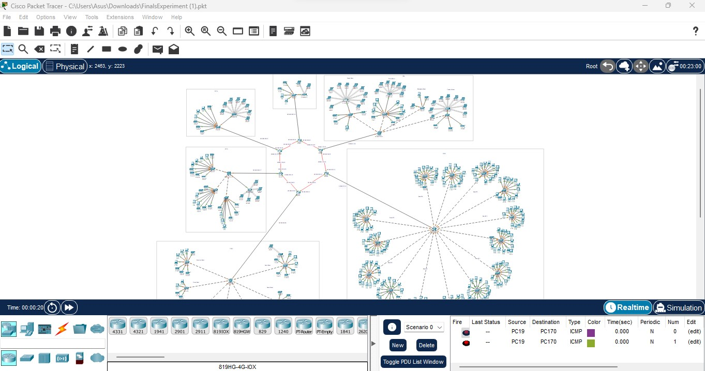

MANG BDIC
Home
Photos
Contact
About me
Hi My name is Jan Benedict J Ante I am Looking forward to work with you
Please feel free to look around the Porfotlio to see my journey and Experiences in my career.

1st Porfotlio Project

Calculator Project

Networking Project

DSD Project